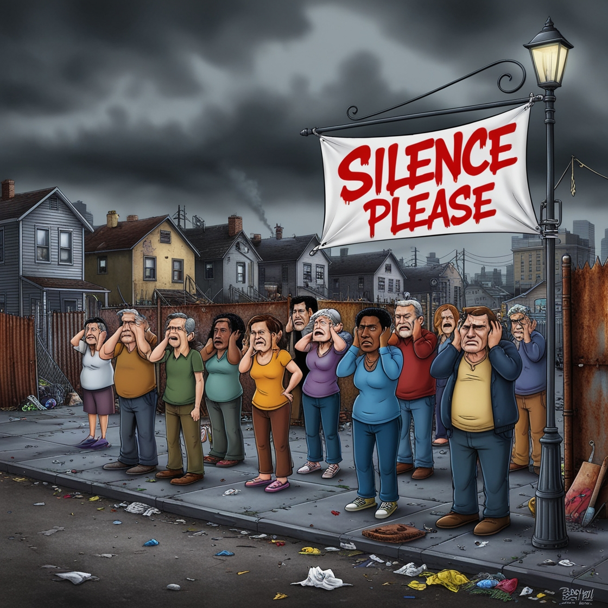

Sources of noise pollution in your neighborhood and workable: Controls for them

Our main Objectives to Learn!?
Noise pollution in neighborhood is a big meance to the society.
We have researched and collected the resource about the main reasons of Noise pollution in cities like Hosiarpur, Jalandhar and phagwara(punjab, India)
Noise pollution comparision in rural and Urban plain areas by reports and stats.